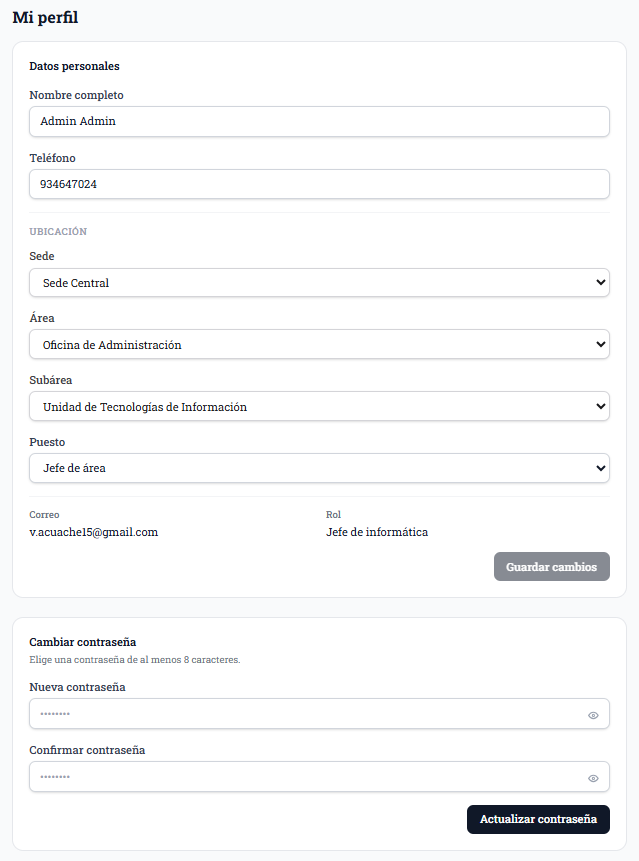

Soporte
Municipal
Guía del trabajador: cómo pedir soporte técnico, paso a paso y sin moverte de tu puesto.
Manual del trabajador · 2026
Iniciar sesión
- Abre la dirección del sistema en el navegador.
- Escribe tu Usuario / Correo y tu Contraseña, entregados por el área de informática.
- Pulsa Ingresar.
- ¿Olvidaste tu contraseña? Usa el enlace "¿Olvidaste tu contraseña?" para recuperarla con tu correo.

Primer ingreso (solo la primera vez)

- Datos del lugar: elige tu Sede → Área → Subárea → Puesto (se eligen en cascada).
- Datos del usuario: escribe tu Nombre y Apellido.
- Datos de la cuenta: registra tu Teléfono y tu Correo (debe coincidir con el entregado). Sirven para recuperar tu contraseña.
- Si quieres, define una nueva contraseña; si no, mantienes la actual.
- Pulsa Confirmar y continuar.
Crear una solicitud de ayuda
- En "Tus datos" verás tu ubicación, cargada automáticamente.
- Elige el Tipo de ayuda: Presencial o Virtual.
- Si es Virtual, escribe tu Código AnyDesk para que el técnico te asista de forma remota.
- Pon un Título y, si deseas, una Descripción del problema.
- Adjunta imágenes (se comprimen, máx. 1 MB) o PDF (máx. 3 MB): por ejemplo, una foto del error.
- Pulsa Enviar Solicitud.

Sigue tu solicitud en la cola

- El estado de tu solicitud aparece como En espera.
- El sistema te dice cuántas personas hay antes que tú en la cola.
- Mientras esté en espera, puedes "Cancelar ayuda" si ya no la necesitas.
- Tus archivos adjuntos quedan visibles para el técnico.
Confirma si se resolvió
- Cuando un técnico toma tu caso, el estado pasa a En proceso y ves el aviso "Un técnico ya está atendiendo tu caso" (máx. 20 min; por privacidad no se muestra su nombre).
- Al terminar, el sistema te pregunta "¿Se ha resuelto el problema?".
- Responde Resuelto o No resuelto.
- El caso se cierra como Solucionado solo cuando tú y el técnico confirman: es la doble confirmación.

Tu perfil y cerrar sesión

- Desde el menú con tu nombre (arriba a la derecha) entra a "Perfil" para ver y editar tus datos: teléfono, ubicación, puesto y tu contraseña.
- Usa "Salir sesión" y confirma para cerrar de forma segura cuando termines.